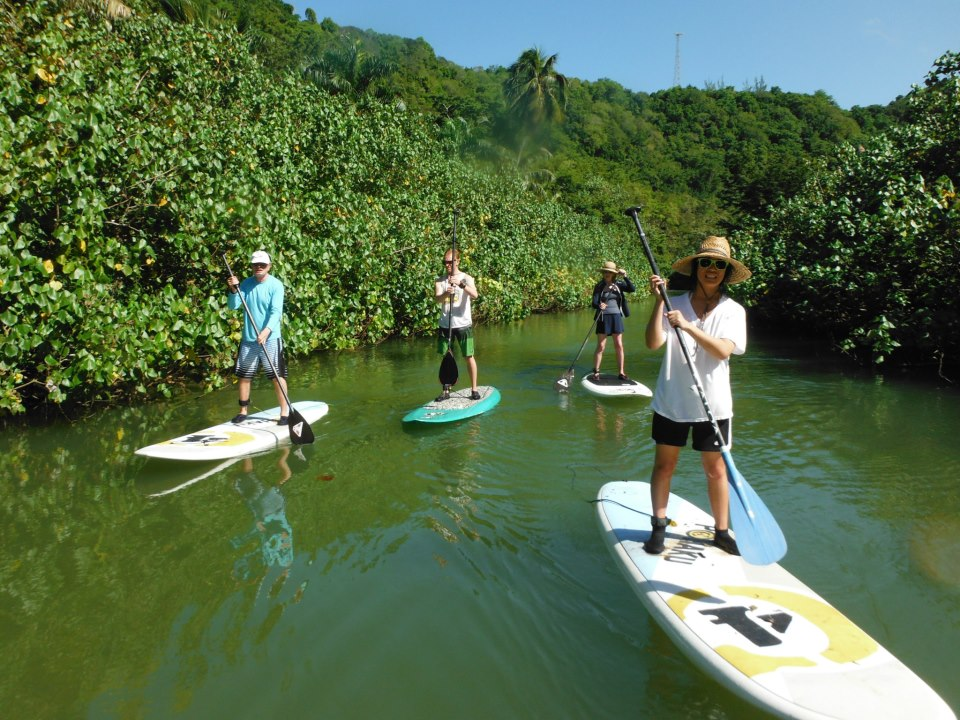
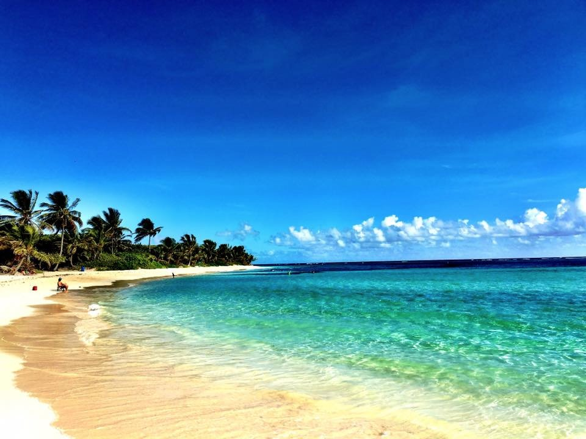
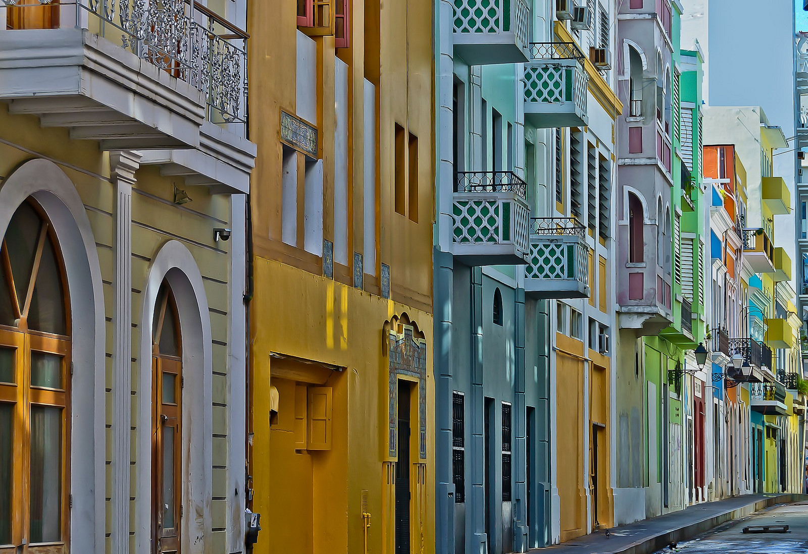

Waterfall climbing in Rocaliza, surfing in Isabela, golfing, and wingsuit flying are some of what’s offered on the island, but it doesn’t stop there. There are several adventure sports, water sports, and adrenaline-focused activities for the taking. Novices should pop over to Vieques Island for mind-blowing snorkeling and check out Toro Verde Adventure Park, where one of the longest zip lines in the world crosses over a magical tropical landscape with panoramic views of the waterfront.
With moderate temperatures, you can plan a trip here year-round. This is ideal for those snowbirds looking for a new destination to head to when winter arrives. With its Caribbean climate, visitors can expect an average annual temperature of 80 degrees alongside lots of sunshine, blue skies, and a cool ocean breeze.
The country’s old Spanish roots can be felt anywhere, but taking a walk down the streets of Old San Juan will have you feeling as if you’ve stepped into a bygone era. Cobblestone streets, brightly painted homes, and historical architecture are all facets of this charming destination. At the Raices Fountain at La Princesa, one of the most romantic spots in the city, water flows from bronze statues – best seen during sunset when the sun blankets the streets in colors of gold. And a true Puerto Rican experience wouldn’t be complete without walking through the centuries-old Fuerte San Felipe del Morro, an old Spanish fort nestled along the cliffside.
